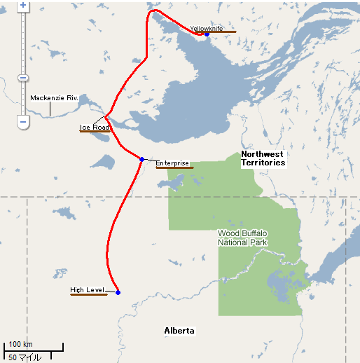

□8日目(2/19)High Level→Yellowknife

ここのモーテルは朝食が無料サービスとなっている。セルフサービスで用意されているのは、パン、シリアル、マフィン、ヨーグルト、リンゴ、ワッフル、フレンチトーストにコーヒー、ミルクなどの飲み物。ありがたくいろんな種類のものを食べることに。そして食べ過ぎたようだ。

今日の目的地はYellowknife(イエローナイフ)。ハイレベルで北緯58度。イエローナイフは62度。アルバータ州とノースウエスト準州の州境は60度である。ちなみに日本最北端の宗谷岬が45度だ。雪は夜のうちに降り止んだようだが、道路は真っ白になっていてセンターラインは全く見えない。少し心配しつつ、イエローナイフに向けて出発。しかし、タイヤがスリップするような感じは全くない。交通量は少ないものの、対向車が通ると、道路上の雪が舞い上がり、路肩に吹き飛ばされて、自然除雪される。トラックのような大型車が対向すると、舞い上がった大量の雪で視界が真っ白になり、少しの間何も見えなくなるので、かなり怖い思いをする。この辺りは進んでも、進んでも景色はほとんど変わらず、ただ森の中の広く白い一本道をひたすら進むだけとなる。

お昼前になり、ようやく北緯60度、ノースウエスト準州(NWT)の州境に辿り着いた。州境を示す大きな看板がある。ここからはNWTの1号線であるMacKenzie(マッケンジー) Hwy.を進む。ノースウエスト準州に入って最初に見つけたEnterprise(エンタープライズ)という小さな町で給油と昼食を買う。レストランなどは無いようで、小さなガソリンスタンドと売店程度しかない。

1号線は所々雪に覆われているものの、そこまで悪い道ではなかった。道の両脇はずっと針葉樹の森が広がっている。1号線と3号線(Yellowknife Hwy.)との分岐で3号線に進み、しばらく行くと、いよいよマッケンジー川のアイスロードに辿り着く。この川には橋がまだ架かっておらず、夏季はフェリーで、冬季は氷の上を車が走る。氷が溶ける時期と、張り始める時期には交通は寸断されてしまう。川の手前の標識には、現在64000kgまでの車が通行可能と表示があった。

アイスロードに出てみると、左手はマッケンジー川、左手はGreat Slave(グレートスレーブ)湖の一面真っ白な世界となる。ただ、車が通る所の氷面だけが、薄い土色に色付いている。世界で10番目に広いグレートスレーブ湖は、地平線の向こうまで、広がっているようにも見える。そしてなぜかカラスが多い。車の周りにまとわりついてきた。

ここからイエローナイフまでは約300km。その間、道沿いの集落は1つもない。携帯も圏外なので、何か起こってしまうと非常に厄介なことになるだろう。そしてこの辺りはバイソン(野牛)警戒区となっているようだ。バイソン注意の標識はたくさん立っている。道の周りの木は背が低くなってきており、たまに見晴らしがいい所も。気温は真昼で-21℃。


未開の原野から突然建物が現れる。そして一気に道路案内標識が増え始め、イエローナイフの都心部に突入。あっという間の出来事だった。まさに都会といった雰囲気だ。こんな極北の地に高層ビルが建ち並んでいるとは・・・。氷点下20℃の中、街は活気にあふれ、多くの市民が街を歩き回っている。町の中心部を少し過ぎた所にあるモーテル”arnica(アルニカ) inn”にチェックイン。最近リニューアルされた宿で、清潔感があり、居心地のいい部屋である。さらにこの宿も安い。受付の人との英会話が完全には理解できなかったが、調べておいた値段より安く泊まることができた。

夕食を食べに、歩いて外出。やはり寒い。鼻の穴の中が、凍り付いてくるのが分かる。街の電光掲示板に表示された気温は、なんと-24℃。携帯の液晶画面もおかしくなってしまうほどの寒さ。これでも多くの人が歩き回っているのだからすごい。


辿り着いたのは、”Sushi North”というお寿司屋さん。店員はみんな日本人だ。店員さんとこれまでの旅について話し合い、握り寿司のセットを注文。中でもオススメと言われたのが、”Arctic Char”(ホッキョクイワナ)の握り。ここでしか食べられないらしい。トロのような食感で、口の中であっという間にとろけて、コクのあるうまみが広がる。その他にも、サーモン、マグロ、エビの握りに、ダイナマイトロール、カルフォルニアロールが出てきた。みんな大満足で店を出たところ、気温は-26℃になっていた。


宿に戻ってくつろいで、夜も更けてきた頃に、外に出て空を見上げてみる。少し雲が広がっている。街の明かりも邪魔となり、今日はオーロラはどうやら見えなさそう。しかし、時間をおいて再び外へ。街の明かりが遠くなる所で見ると、ぼんやりオーロラが出ているのが分かった。本格的に見るのは明日である。